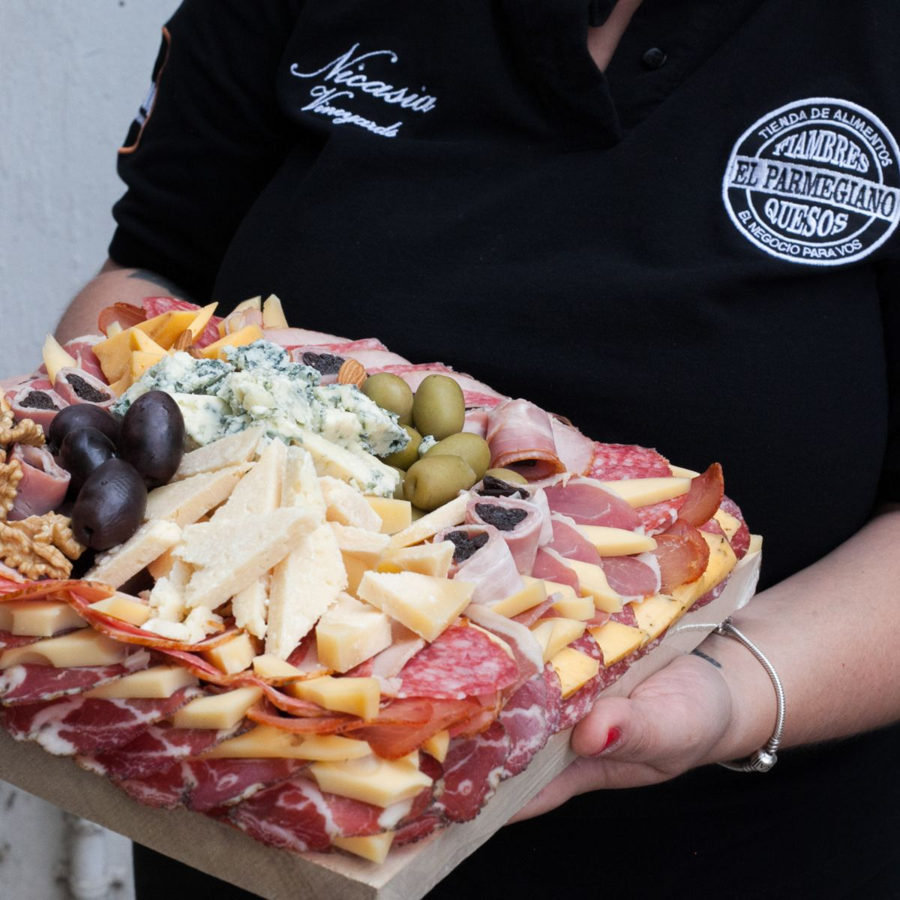
×Rediseño del sitio web, CRM central y un asistente de WhatsApp para los 10 locales de El Parmegiano.
Saltá la fila: pedí por WhatsApp y retirá listo.
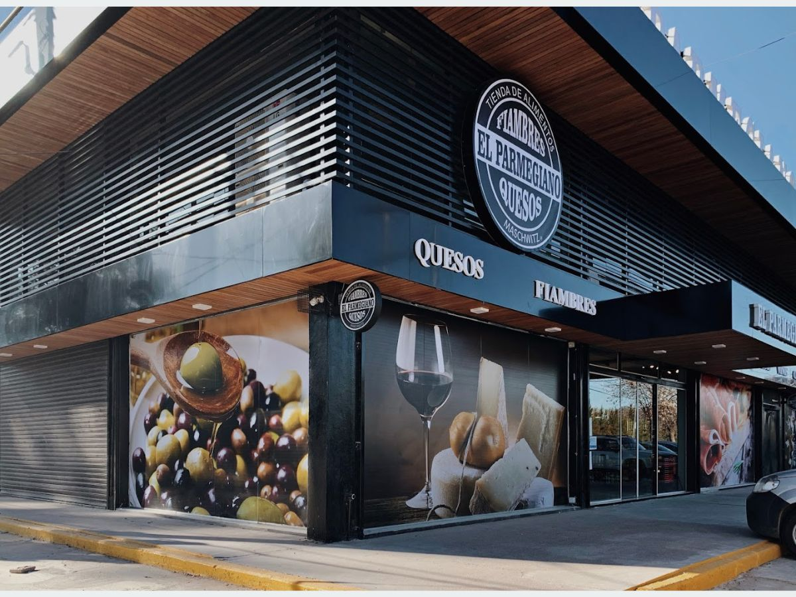
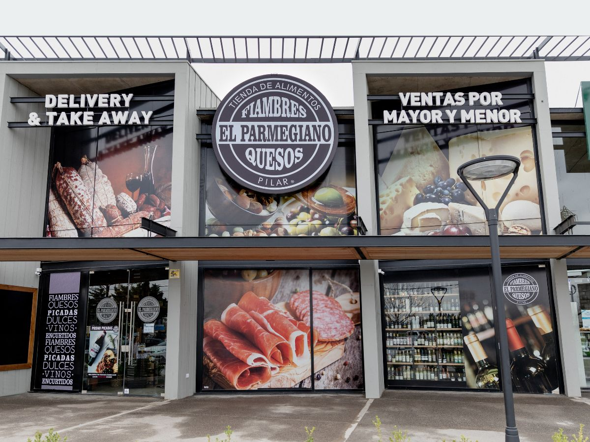
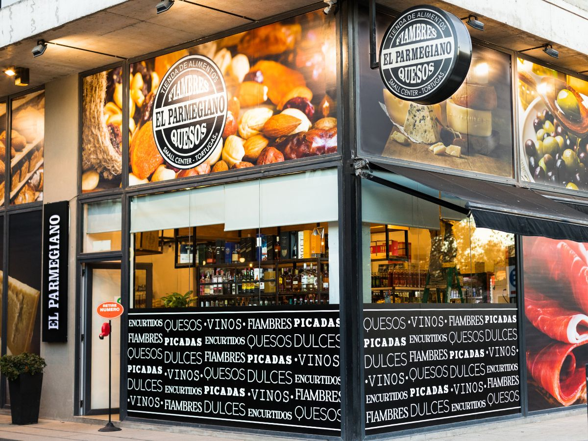
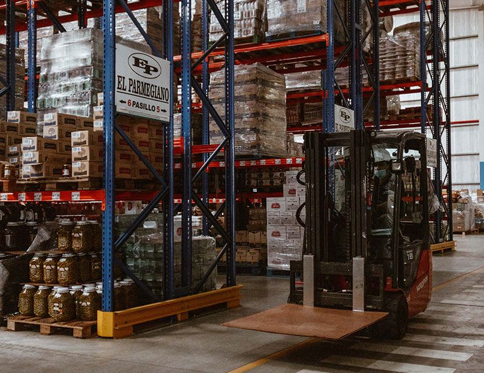
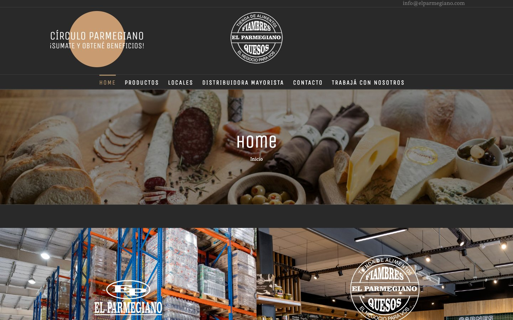
Sitio actual · captura del 22/10/2026
Cada local atiende con su propio WhatsApp o teléfono, desde el celular del equipo. La venta pasa por ahí, pero casa central no la ve.
La vidriera de la marca: estética a la altura de los locales, mobile first, con locales en vivo y pedidos por WhatsApp en cada botón.
Atrae"Parme" responde 24/7, toma pedidos y picadas, deriva al local correcto y califica mayoristas y franquicias.
AtiendeEscobar ve todas las conversaciones, pedidos y oportunidades de los 10 locales en un solo lugar, con métricas por local.
ControlaConcepto "almacén moderno": papel de fiambrería, negro pizarra como las fachadas nuevas y el ticket de turno del mostrador como hilo conductor.
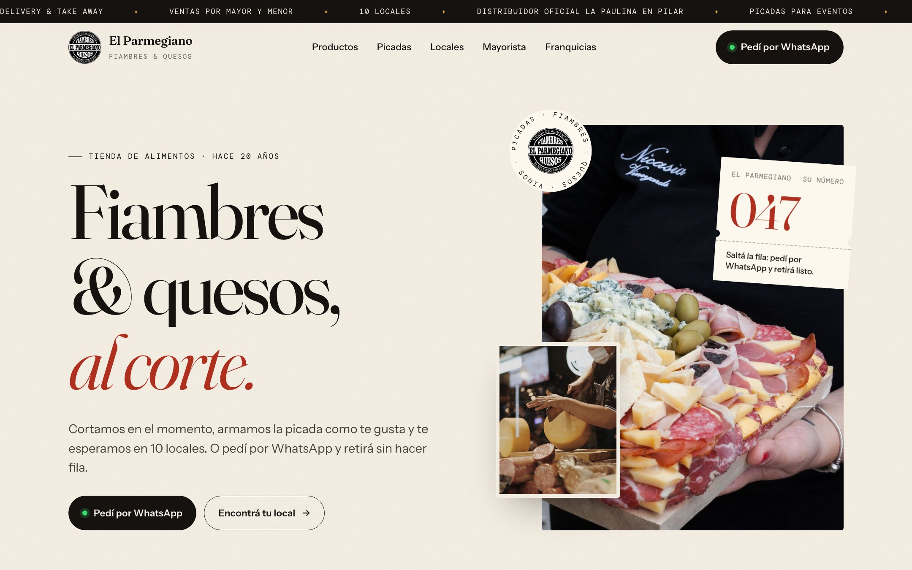
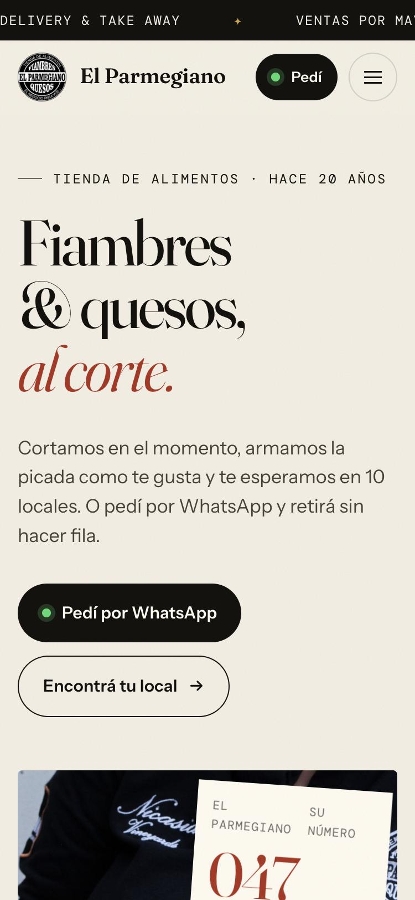
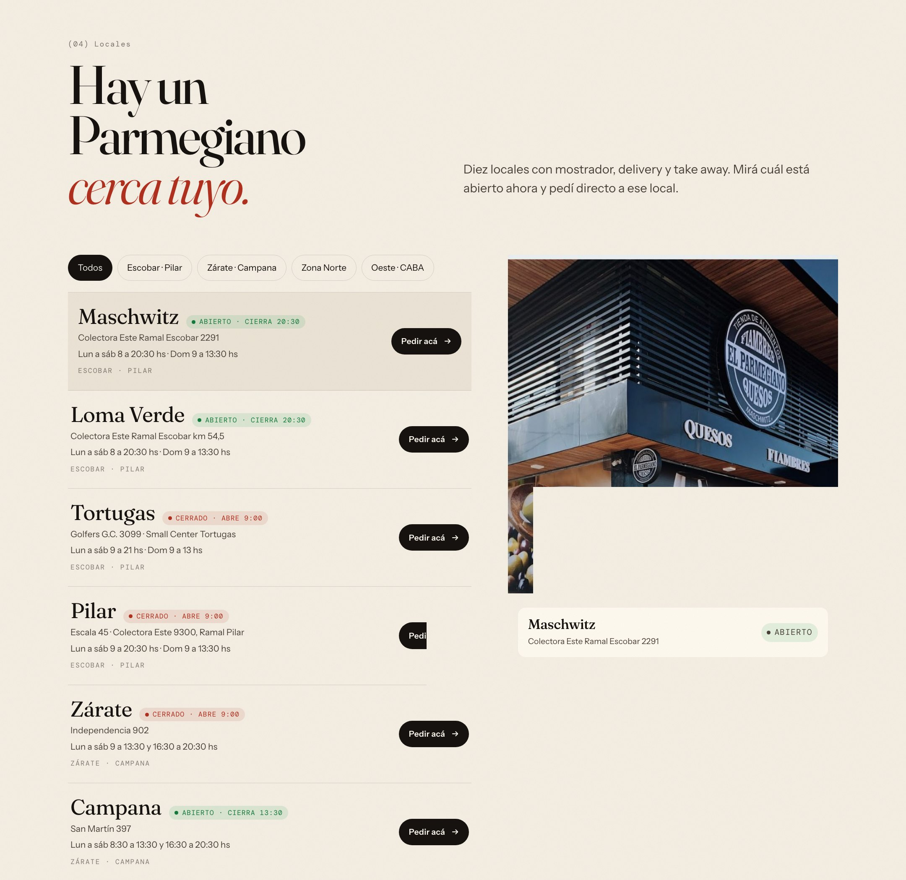
Filtro por zona, "abierto ahora" calculado con el horario real y botón "Pedir acá" que abre el chat ya ubicado en ese local.
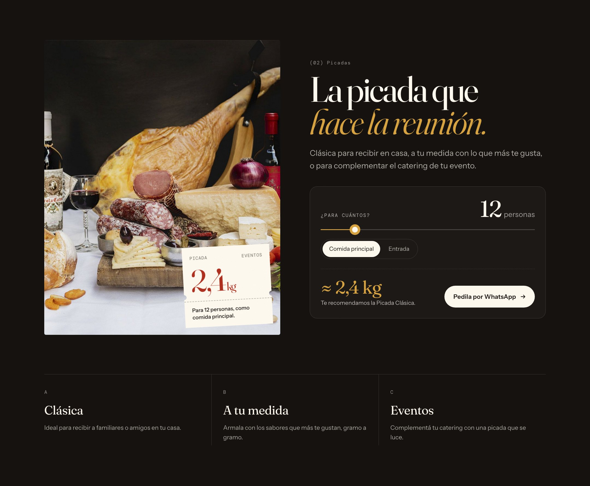
El cliente elige cuántas personas son y ve los kilos sugeridos y la picada recomendada. Un clic y la pide por WhatsApp.
El cliente pide una picada para 12, elige Pilar y retira a las 19 hs. El pedido llega al equipo del local y queda registrado en el CRM.
En el mockup se puede probar el chat en vivo
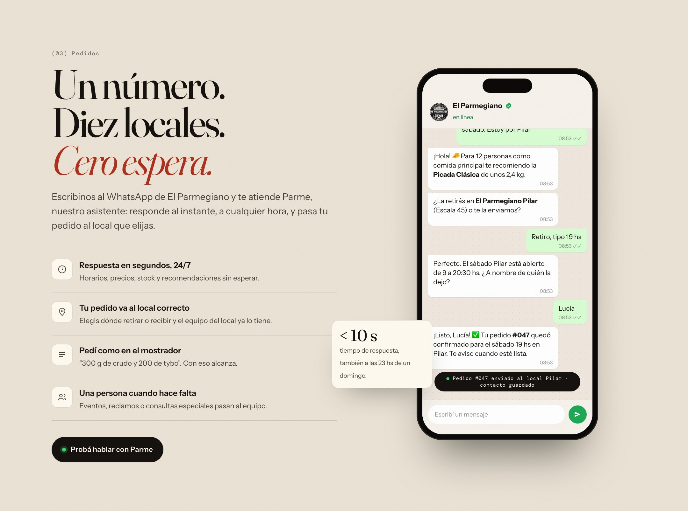
Entrenado con el catálogo, los horarios, las zonas de envío y el tono de la marca. Nunca inventa precios: lo que no sabe, lo pasa a una persona.
Una sola plataforma con bandeja unificada, pipelines y reportes. Casa central administra marca, catálogo y asistente; cada local opera sus pedidos con un usuario restringido.
Un WhatsApp central de El Parmegiano en el sitio, Instagram y cartelería. Parme detecta la zona y deriva al local. Cada franquiciado ve solo su bandeja.
Cada local conserva su número actual, conectado a la misma plataforma y al mismo asistente. Útil si un franquiciado necesita mantener su línea.
Se pueden combinar: número de marca para lo nuevo y los números de cada local conectados de a uno. Cada migración se coordina con el local para no cortar la atención.
Catálogo, precios, horarios, zonas de envío, tono de marca y fotos. Definimos el modelo de números.
Diseño final y desarrollo del sitio. Configuración de pipelines, usuarios y tableros.
Parme en 2 locales cercanos a casa central (Maschwitz y Pilar). Ajustamos con conversaciones reales.
Despliegue a toda la red, capacitación de cada equipo y lanzamiento del sitio.
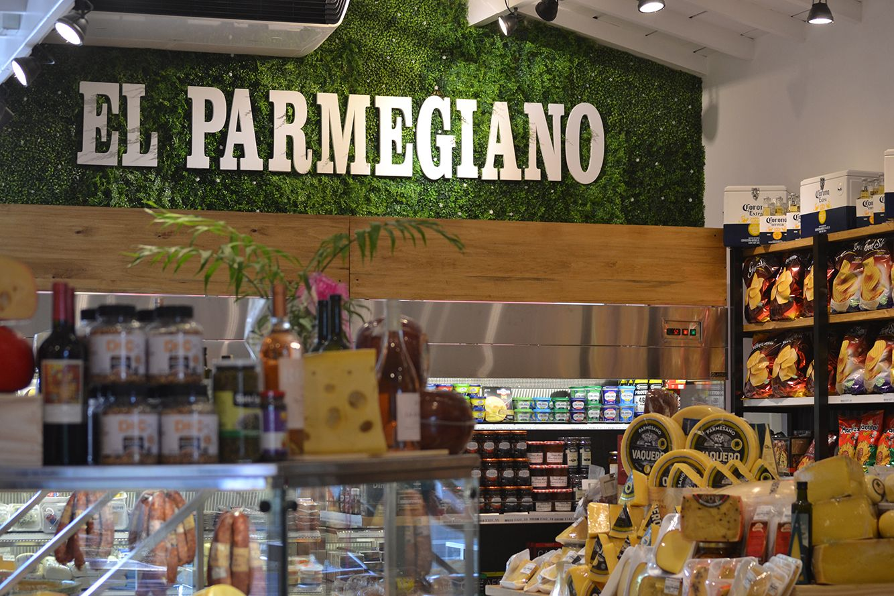
Una reunión de relevamiento en casa central, y en 30 días Parme atiende en dos locales con conversaciones reales. La propuesta económica la armamos a medida después de esa reunión.